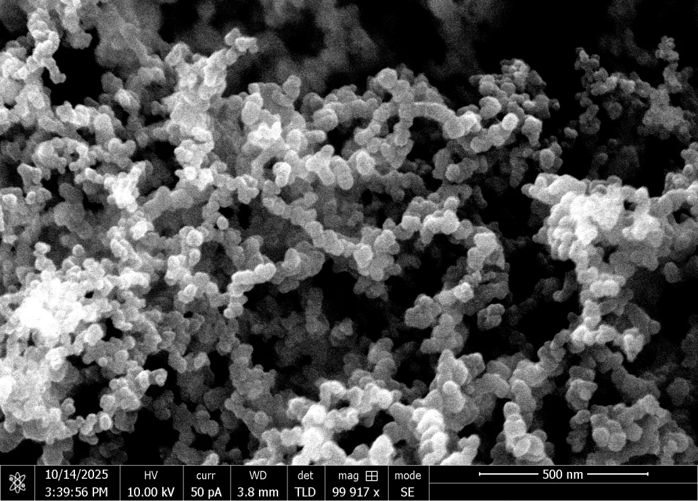

I'm a math & CS student at Stanford interested in scientific superintelligence and generalist robotics.
Recently, I was a fellow at Comma Capital, an early-stage fund based in NYC. Previously, I worked on nanomaterials for thermal transport in high-performance computing and the formability of magnesium alloys.
In an earlier life, I was named a Regeneron Science Talent Search Scholar, competed in the U.S. National Chemistry Olympiad, and won the VEX World Championship.
